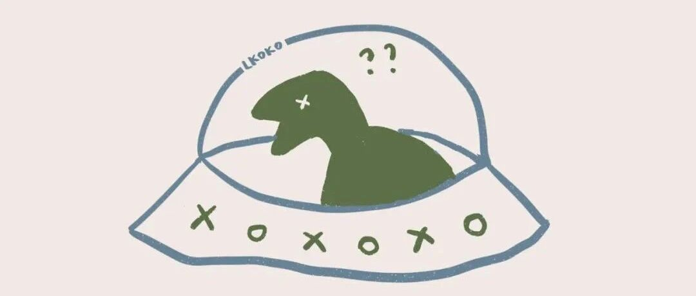

干货 | 读书笔记怎么写?这篇统统告诉你
和 我 一 起 治 愈 生 活

图：@网络
文：@秋秋
大家好，我是秋秋子。
不知道你有没有这种感觉，明明都是看同一本书，但别人好像比你吸收的多。自己才读完不过一个星期，好像就全忘了😭
其实并不是你读的不认真，很可能是没做好读书笔记。

今天秋秋就分享下读书笔记的重要性和如何做好笔记吧~
干货很多，特意整理目录如下：
（1）从心理学角度：读书笔记为什么有效？
（2）如何做读书笔记？我的方法
（3）这些必备工具，读书笔记更高效
（4）这些读书笔记模板，你可以用

1.读书笔记，为什么有效
从心理学上解释（又回到我的大学专业），这就是主动学习和被动学习的区别啦。
主动学习：指有意义的去加工建构你所学的知识；被动学习反之。而读书笔记更像是主动构建的过程。
这里想给大家介绍下学习金字塔理论（会让你更容易理解）：

（图片来自百度）
在这张图上，塔尖是第一种学习方式——“听讲”，也就是老师在上面说，学生在下面听。
这是我们最熟悉也最常用的学习方式。学习效果最低，两周以后只能记住学习内容的5%（学霸除外）；
第二种，“阅读”学习，可以记住10%（也就是单纯看书）；
第三种，“声音、图片”结合，可以记住20%；
第四种，示范”学习，可以记住30%；
第五种，“小组讨论”，可以记住50%；
第六种，“做中学”或“实际演练”，可以记住75%；
最后一种：是“教别人”或“马上应用”，可以记住90%。

这个理论的提出者是爱德加·戴尔，也就是说 听读看前三种方式，学习效果都在30%以下，属于被动学习。学习效果在50%以上的都是主动学习。
类比到阅读上：

（图片来自辰五）
听书、读书和简单摘抄都属于被动学习，对知识深加工较少，记住的内容在30%以下。
而读书笔记是最快对知识进行深加工的方式，可以把记忆效率提高到50%。
如果你能在笔记中标记出来可以实践的部分并不断输出，那知识就可以掌握90%以上（是不是很心动！）。
但单纯摘抄金句可不行，什么样的读书笔记更高效？有没有快速用起来的模板呢？继续看下去吧~
2.如何做读书笔记 ？
很多人以为读书笔记是看完书之后摘抄总结就可以，其实读书笔记从打开书那一刻就开始了~
摸索了很久，我现在的方法是：一看、二记、三总结，大家可以参考~
（1）看👀
//看目录
刚刚打开一本新书，要先看目录。这个时候只带一根笔把目录里面的关键部分画出来即可。

这一步可以为你后面做思维导图节省时间。
//看内容
这时候开始顺序阅读。
一本书，不是每一个字每一句话都是精华，所以阅读的时候我通常只带2个颜色的笔。
一支红色：标记金句
一支绿色：标记今后可以使用到的方法

这样后面整理非常方便。
以小狗钱钱举例（这本书兼具故事性和工具性），红色标记总结性的语句，启迪深思。绿色标记一些好用的方法，并且立刻尝试使用。

//回看框架
每个章节看完内容，要再回去看下框架。哪些是能回忆出来的，哪些没有记住的，这样反复，印象更深刻。
（2）记✍️
内容读完之后（也可以是一个章节结束后）就可以开始做读书笔记了。那要记什么？我大概分为这几类，用到的工具是onenote:
//金句

把用红笔划线总结性的话单独整理到固定位置即可～
//方法

把可以指导行动的单独放在一个位置，方便指导行动。
//例子

写作或者今后用到的素材单独放。因为我要写公众号要用到很多案例，所以还特意分类整理了，这样写到不同类型文章再去找例子就很方便。
//感悟
也就是自己瞬间的感触，这个建议用手机备忘录随时记录。

（ 当时刚看完莫言的《蛙》 ）
有时候看到某个具体情节，当下会有很多感触，可能不够完善精致，但一瞬间的东西更宝贵，多练习你的情感也更细腻。

但以上只是记的部分，也就是读书效果提到30%的部分，如何从30%上升到90%呢？那就是总结。
（3）总结📚
在完成上一步分类整理之后，我们还要继续总结。下面是我常用的一些方法（用到的软件: 印象笔记）。
//01思维导图

上面记录可以说是相对简单的部分，但从这一步就是拉开差距的关键了。
这么说，单纯记录可以帮你把书的肉都吃掉，但思维导图可以帮你把书的筋骨整理出来。
毕竟只吃肉到最后会有点腻（分不清吃的谁的肉），有了筋骨才会更清晰（我真是举例小天才）。
而且我现在发现，从前你认为的金句方法，现在可能不那么认为了，从前你没看到的方法，再看一遍可能才能理解。所以做思维导图定期复习就很有必要。
//02 Todo List

在「读书笔记-方法」旁边，要再进行批注，把你今天或者这周打算尝试的整理粗来，这一步是融会贯通书的关键。
比如我看小狗钱钱，第一章就讲了要做梦想相册（把自己想要做到的事情记下来并且贴上照片），我在旁边标记了TODO，当晚就去做了。
现在回忆起来，小狗钱钱的梦想相册、成功日记、做自己擅长的事谋生、理财我都听话照做了，所以也是对书本内容记的最清楚。
//03心得
当然，最好的还是能做到内容的输出。

比如看完《子弹笔记》分享它的用法、还有写各种读书感悟。如果没有公众号这个平台，也可以在豆瓣、微博、朋友圈、甚至是开读书会和朋友交流、拍视频分享都可以。
上周我就约了朋友来家里开读书会，大家每个人都要分享最近读的书，听的人还要向他提3个问题，看他回答的质量给打分。这样既有趣还能把书的内容都复习上~大家可以试试。
总结：我的读书笔记思路如下


(用表格表现就是这个样子）
3.读书笔记常用APP
看了上面，你也许以我读书笔记会用我们很长时间，但其实不是。
在做读书笔记的过程中，这些工具可以帮你大大提升效率。比如原来3个小时完成的事情，现在有了他们，1个小时解决。
NO.1
ibooks

主要是用来看书的，之前写过宝藏找书的网站，找好的书我一般用这个APP阅读。好处是里面标记颜色特别好看，整理到笔记里面还会自动标记出处。

（左边是标记的句子，自动归类）
NO.2
onenote

主要是用来分类整理，里面可以建立很多个文件夹，分类管理很清晰。
建议从小就开始分类保存自己的各种文件，真的是一种特别好的习惯。做读书笔记搭配iBooks——绝配！

(出处是直接IBOOKS复制带的）
NO.3
讯飞语记

如果不经常看电子书，纸质书的话就推荐用这个！我的使用方法是直接对着书把画线的部分读出来，再整理成电子版。
手写摘抄真的太难坚持下去了。对手写有执念的人也可以继续看下去，有好看的手写模板~
NO.4
Xmind

上文提到做思维导图的APP，之前写过一篇关于思维导图怎么做以及APP对比的文章，印象不深刻的小伙伴可以再复习一下~
同样对手写有执念的也可以手画思维导图、或者打印出来也很方便（保存PDF格式）。

（新手也很好上路，模板很多）
NO.5
印象笔记

相比于ONENOTE，风格更加条理清晰。可以自动打标签、关键词搜索。我现在主要是把书籍按照书名整理的时候用这个APP，日常分类整理用ONENOTE。

（条理清晰、风格更直男一些）
NO.6
keynote

微博小红书经常看到别人做的读书笔记都是用这个APP做的，可以随意做出自己喜欢的读书笔记模板，比如：

（@叫我阿绿）

（@开心市民阿岚）
大家可以多去研究研究。但是秋秋要提醒一句，上面这种模板更适合输出总结的时候使用，刚开始还是要老老实实阅读整理做思维导图效果更好哦（否则效率还是30%）~
NO.7
读书笔记

也是懒人专用APP，我主要是偶尔用来拍照识别文字。但是其实用的不是特别多（都是讯飞语记读了），有需要的小伙伴可以试试~
4.读书笔记模板
相信看到这里的都是非常认真的小伙伴了，最后我整理一些适合总结归类时使用的模板，希望能帮助到大家。
注意:前面看书画线、归类整理、TODOLIST、心得才是拉开差距的关键，下面这些模板不要一开始就使用哦。


（部分来自网络，侵删）
写在最后☕️
这篇文章前前后后写了差不多3天，因为想真的找到一个方法帮大家提高读书效率。
如果你可以按照这个从头开始执行，相信之后看的每一本书，都能收获更多~
以上所有的方法来自秋秋个人经验总结，不一定适合所有人，所以大家一定要再根据自己的情况及时调整。
最后，我文章写的可能比较慢但希望每一篇都对大家真的有帮助~下期见了。

公众号规则又变啦~
大家觉得文章写的认真，记得给秋秋点个赞哦：）